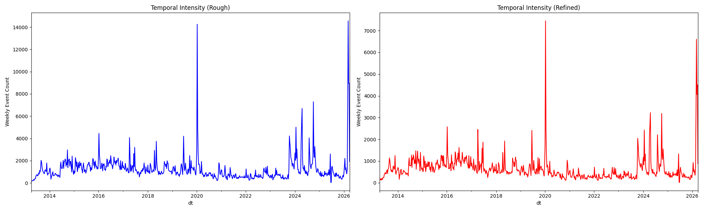
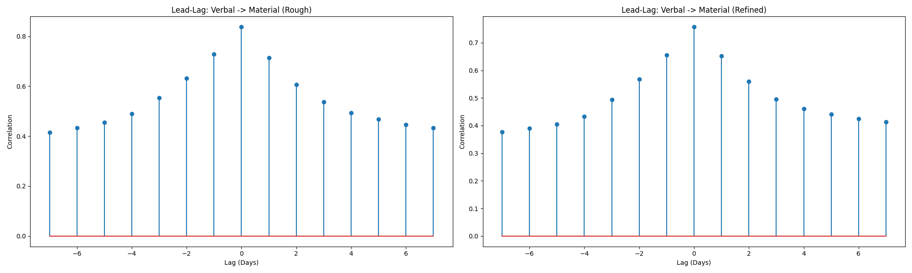
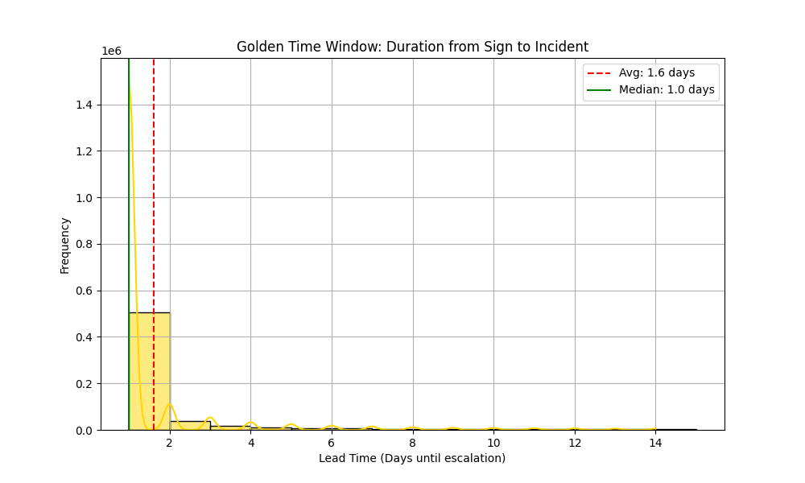
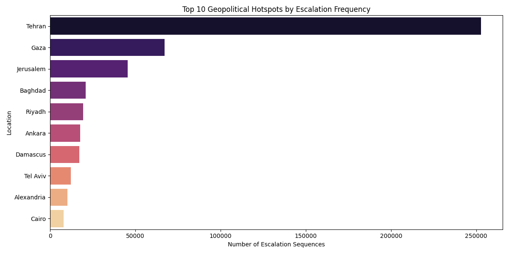

본 보고서는 이란-미국 갈등 데이터를 기반으로 위성 촬영 골든타임을 분석한 결과입니다.
| 지표 | 기존 전략 (Rough) | 고도화 전략 (Refined) | 변화량 |
|---|---|---|---|
| 전체 사건 수 | 842,623건 | 437,794건 | -48.0% |
| 고유 지점 수 | 7,371곳 | 5,406곳 | -26.6% |


평균 골든타임 윈도우: 1.6일


정밀 필터링을 통해 시그널 대비 잡음비(SNR)가 획기적으로 개선되었으며, 1.6일의 리드타임을 확보하여 위성 예약 시스템의 실효성을 입증했습니다.